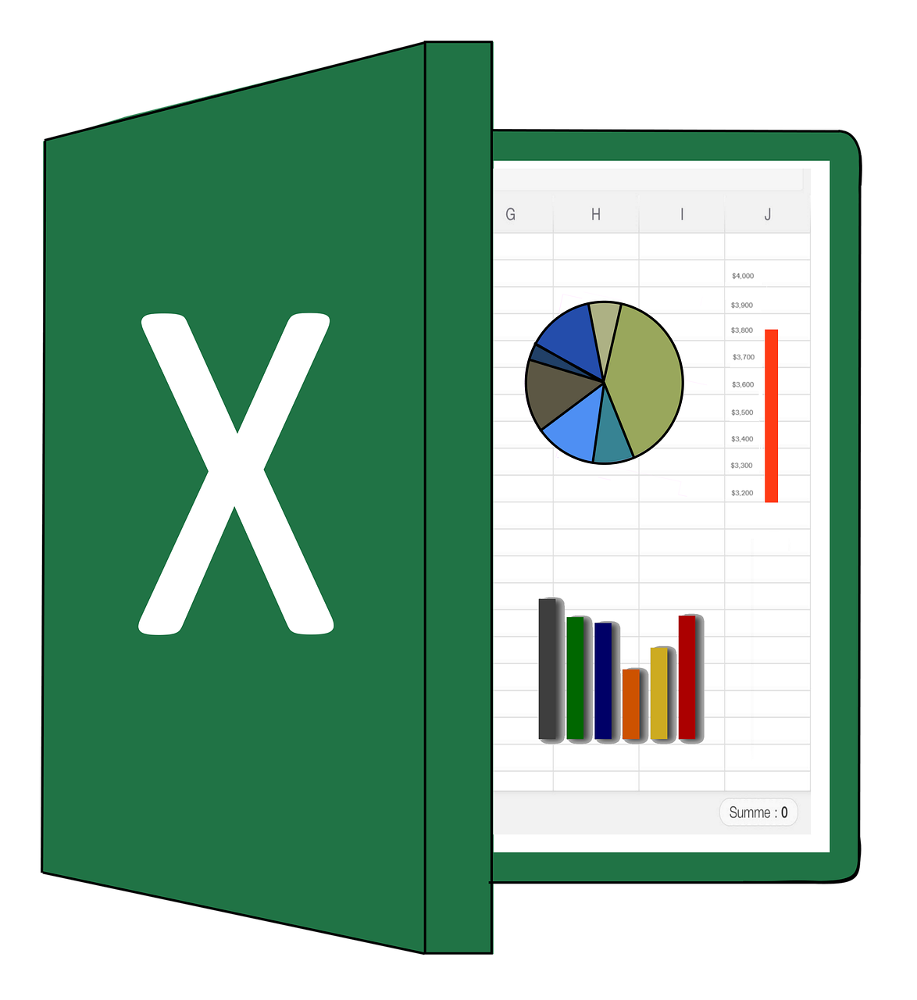

This project focuses on data cleaning and exploratory data analysis (EDA)
using SQL on a dataset containing global layoffs across different industries.
The objective was to prepare, clean, and analyze the dataset to extract
meaningful insights into layoff trends.
.png)
This project involves analyzing global COVID-19 data using SQL to extract
meaningful insights from real-world datasets.
The objective is to explore key pandemic trends, such as infection and mortality rates,
vaccination progress, and the impact of COVID-19 on different countries and continents.

This Links to all My Tableau Project

This Links to all My Excel Projects
Donec eget ex magna. Interdum et malesuada fames ac ante ipsum primis in faucibus. Pellentesque venenatis dolor imperdiet dolor mattis sagittis magna etiam.
This project explores the relationships (correlations) between various movie attributes such as budget, revenue, rating, and genre. The goal is to identify which factors contribute most to a movie’s success using Python data analysis techniques.
By leveraging pandas, seaborn, and matplotlib, we analyze trends and visualize insights from a dataset containing movie metadata.